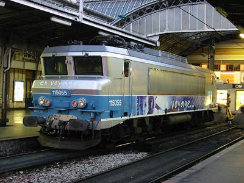

Trains Réels
Cette partie du site a l'intention de présenter le matériel réel exploité par la SNCF. Les différents matériels sont classés en fonction de leur catégories.
Chaque fiche décrit le matériel sous les angles techniques et historiques ainsi que la nature de leur exploitation commerciale, les différentes livrées, les machines particulières et renvoie, le cas échéant, vers la reproduction virtuelle du matériel.
Dossier photo sur le Patrimoine de la SNCF
Locomotives à vapeur
Locomotives à courant continu
Locomotives à courant monophasé
Locomotives bicourantes
Locomotives polycourantes et polyfréquence
Locomotives Diesel
Locotracteurs et draisines
Eléments Automoteur électriques
Eléments Automoteur Diésel
Eléments Automoteur Bimode
Trains à Grande Vitesse
Voitures Voyageurs
Remorques d'Automoteurs
Wagons

La BB 115055 à Paris Est dans sa nouvelle livrée "En Voyage"